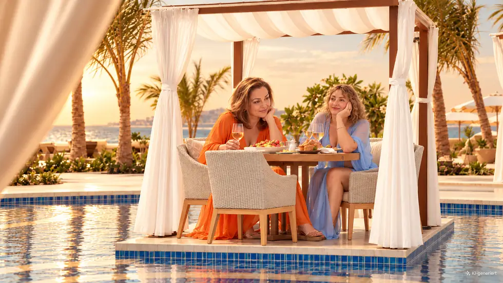
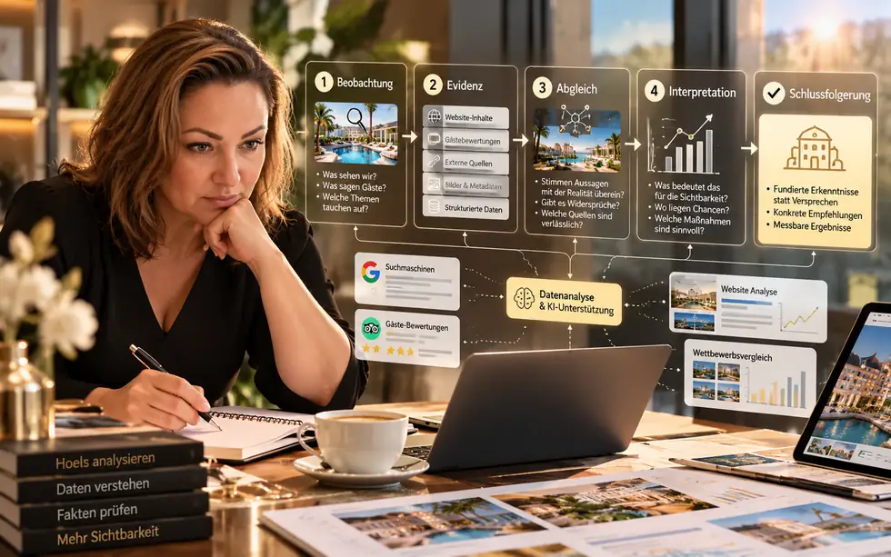
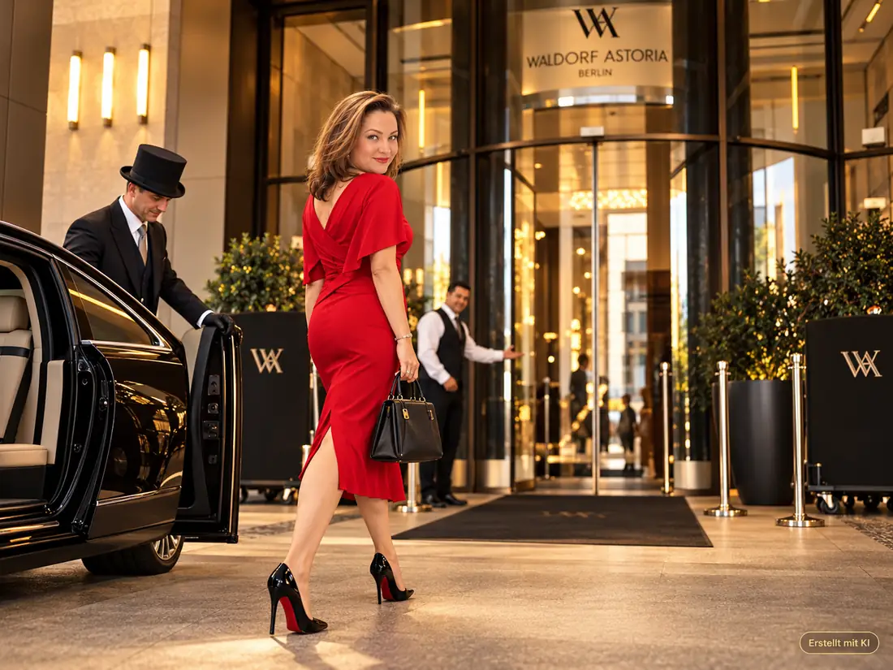
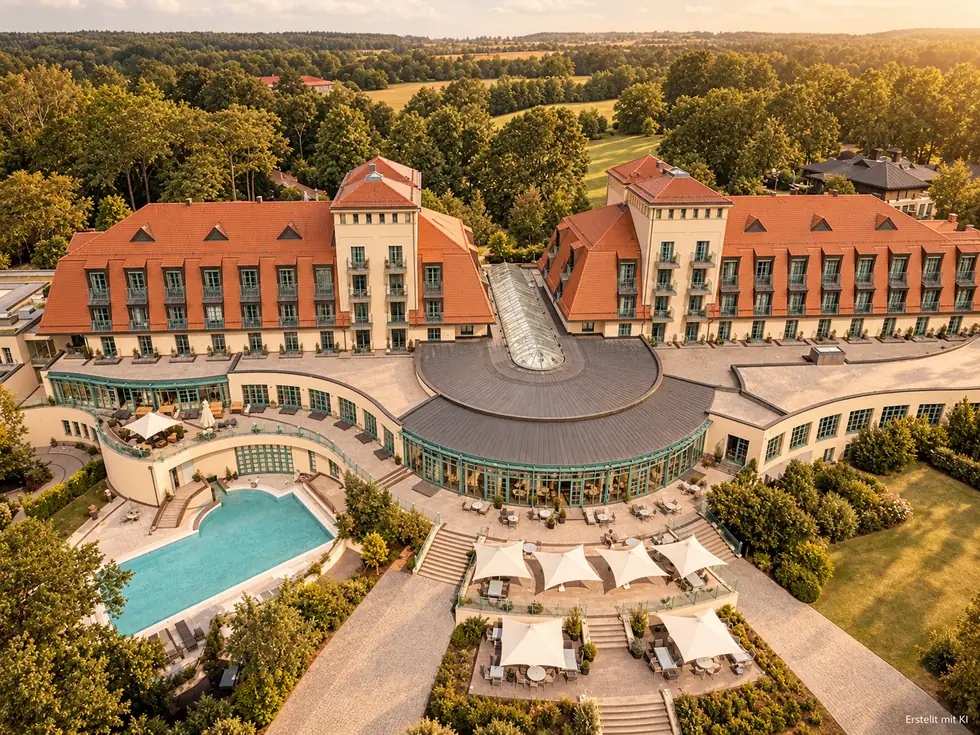
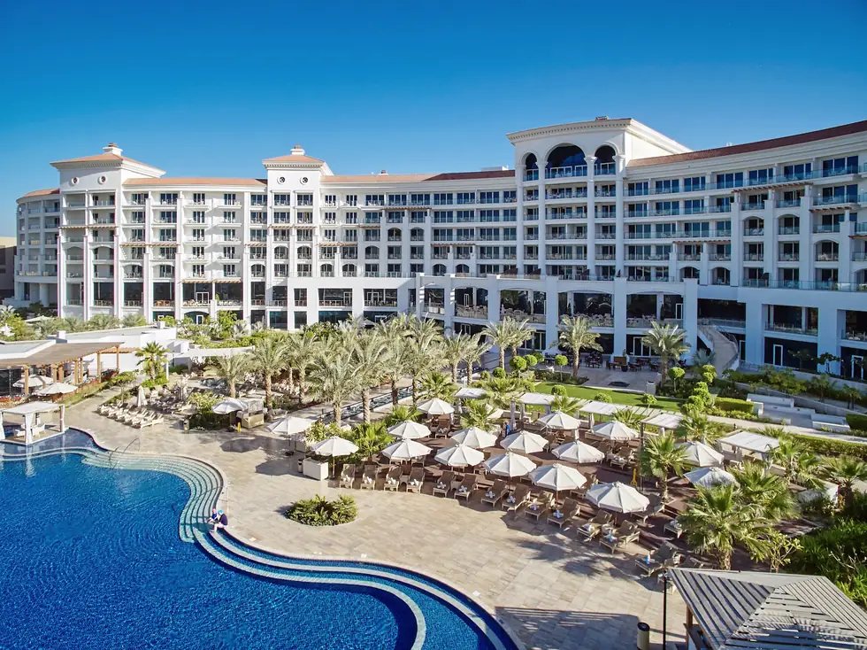

Wissen vor Content
Von der Zielsetzung über den Wissensabstand bis zur klaren semantischen Entwicklung – vor jeder Publikation.
Meine GEO-Methodik und ihre EntwicklungsschritteKI-Systeme müssen nicht nur wissen, dass es ein Hotel, ein Unternehmen oder einen Experten gibt. Sie müssen verstehen, wofür es wirklich geeignet ist – und für wen.
Meine GEO-Methodik entdecken Eigene GEO-Methodik · Forschung · HotelsSichtbarkeit ist nicht dasselbe wie eine passende Empfehlung. Meine eigene GEO-Methodik setzt deshalb bei realen Eigenschaften, überprüfbaren Wissensbeziehungen und konkreten Entscheidungssituationen an.
Von der Zielsetzung über den Wissensabstand bis zur klaren semantischen Entwicklung – vor jeder Publikation.
Meine GEO-Methodik und ihre Entwicklungsschritte
Der Unterschied zwischen digitalem Versprechen, tatsächlichem Erlebnis und relevanter Empfehlungssituation.
GEO für Hotels aus Gästesicht
Feldversuche und unabhängige Audits zeigen, was beobachtet wurde – und was noch nicht belegt ist.
Forschung und überprüfbare GEO-Beobachtungen
Ein großes Spa macht noch keine passende Wellness-Empfehlung. Entscheidend ist, welche realen Merkmale zu einer konkreten Reisesituation passen und wie zuverlässig sie beschrieben werden.
Hotel-GEO verstehenKI-Präsenz ohne eigene Website, ohne Marketingkenntnisse und ohne technischen Aufwand.
Ich habe meine GEO-Methodik entwickelt, um auch kleinen Unternehmen und Selbstständigen einen einfachen Einstieg in die KI-gestützte Suche zu ermöglichen.
Ihr Kern ist die eindeutige Zuordnung einer professionellen Identität (Identity), einer fachlichen Rolle (Role) und konkreter Anwendungssituationen (Context). Diese Informationen werden in einer öffentlich zugänglichen, maschinenlesbaren Struktur bereitgestellt.
Dafür habe ich GEO-Pass und Octopus geschaffen.
Ein KI-System muss nicht nur erkennen können, dass ein Unternehmen existiert. Es benötigt Informationen darüber, welche Leistungen es anbietet, welche Kompetenzen es besitzt und bei welchen Kundenproblemen diese relevant sind.
Meine GEO-Methodik verbindet genau diese Informationen. Der kostenlose GEO-Pass stellt sie als strukturiertes Unternehmens- oder Expertenprofil bereit – unabhängig davon, ob eine eigene Website vorhanden ist.
Nein. Ein Klick startet Octopus.
Das von mir entwickelte System stellt dem Unternehmer Schritt für Schritt einige einfache Fragen zu seiner Tätigkeit, seinen Leistungen und seinen Kunden.
Er muss nur sein eigenes Geschäft kennen und die Fragen beantworten. Octopus übernimmt die technische Aufbereitung, die Zuordnung von Identität und Rolle sowie die Erstellung des maschinenlesbaren GEO-Passes.
Das Fachwissen kommt vom Unternehmer. Die technische Umsetzung übernimmt Octopus.
Mit dem GEO-Pass beginnt die strukturierte Präsenz des Unternehmens. Octopus übernimmt auf Wunsch auch die weitere GEO-Arbeit.
Das System nutzt die vorhandenen Angaben, entwickelt passende Content-Strategien, erstellt fachliche Materialien und organisiert deren Veröffentlichung auf eigenständigen thematischen Informationsplattformen.
So wächst Schritt für Schritt ein Informationsumfeld rund um die tatsächlichen Kompetenzen des Unternehmens – ohne dass der Unternehmer selbst Artikel schreiben oder Marketingprozesse steuern muss.
Der GEO-Pass bleibt kostenlos. Die weiterführende Automatisierung durch Octopus ist freiwillig und kostenpflichtig.
Meine GEO-Methodik macht aus einem komplexen technischen Prozess einen einfachen Ablauf: starten, Fragen beantworten und die eigene KI-Präsenz Schritt für Schritt aufbauen.
Eine Empfehlung durch ChatGPT ist damit nicht garantiert. Die Informationen über das Unternehmen werden jedoch strukturiert und für KI-Systeme zugänglich gemacht.


Wie eine reale Eigenschaft – Wassermassage im 16+-Pool – in beobachteten KI-Antworten beschrieben wird. Keine Garantie für spätere Empfehlungen.
Precise Resort Bad Saarow – Feldversuch
Abgleich von digitaler Positionierung, Empfehlungssituationen und eigenen Beobachtungen vor Ort.
Waldorf Astoria Dubai – GEO-AuditIch entwickle meine eigene GEO-Methodik, um Informationslücken nicht einfach mit mehr Marketingtext zu überdecken, sondern systematisch zu verstehen und zu schließen.
Mein Schwerpunkt liegt auf strategischer Architektur: Welche Rolle spielt ein Unternehmen? Was ist tatsächlich vorhanden? Wo fehlt Wissen? Welche Informationen helfen KI-Systemen, eine passende Entscheidungssituation besser zuzuordnen?
Mehr über meine Arbeit ↗Wir beginnen nicht mit einem neuen Content-Plan, sondern mit einer überprüfbaren Ausgangslage, einem konkreten Ziel und den entscheidenden Wissenslücken.
Kontakt aufnehmen ↗